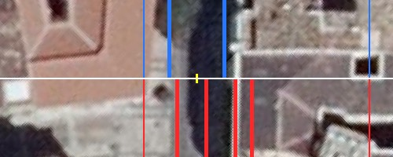
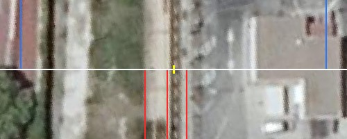
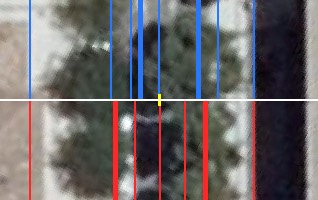
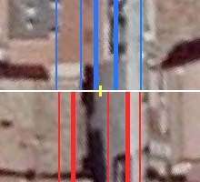
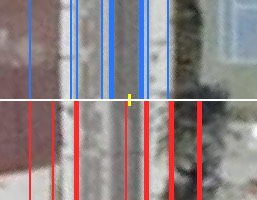
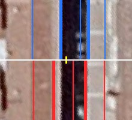
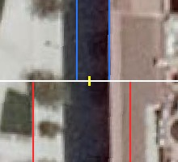
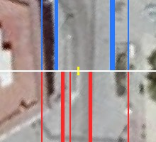
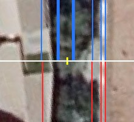
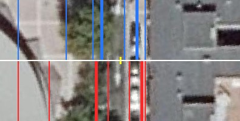

zg13 · Calle Roger de Tur (zaragoza) bez pasportu: chodnik 3.55 · pruh 4.75 · parkovani 2.05 · chodnik 4.05 s pasportem: chodnik 3.1 · parkovani 2 · pruh 3.2 · pruh 2.75 · parkovani 1.7 · chodnik 1.65

zg14 · Calle de Don Jaime I (zaragoza) bez pasportu: plocha 3.2 · pruh 7 · plocha 18.52 s pasportem: chodnik 4.2 · pruh 3.75 · delici 3.65 · pruh 2.1 · plocha 15.02

zg16 · Avenida José Atarés (zaragoza) bez pasportu: cyklostezka 2.5 s pasportem: chodnik 3.25 · cyklostezka 2.8

zg17 · Calle de José Galiay Sarañana (zaragoza) bez pasportu: plocha 8.05 · chodnik 2 · plocha 0.95 · pruh 1.92 · pruh 3.92 · chodnik 2 · plocha 3.59 s pasportem: chodnik 8.55 · parkovani 2 · pruh 2.5 · pruh 2.5 · parkovani 2 · chodnik 4.89

zg18 · Calle Privilegio de la Unión (zaragoza) bez pasportu: chodnik 2.7 · plocha 1.55 · pruh_piktokoridor 2.2 · chodnik 2.85 s pasportem: chodnik 1.5 · pruh_piktokoridor 3.9 · parkovani 2.1 · chodnik 1.4

zg19 · Calle de Domingo Miral (zaragoza) bez pasportu: chodnik 4.1 · plocha 0.6 · cyklostezka 2.5 · plocha 0.9 · pruh 3 · plocha 0.7 · chodnik 2 s pasportem: plocha 2.35 · chodnik 2.25 · pruh 4.95 · parkovani 2 · chodnik 2.6 · pruh 2.75

zg20 · Calle de Mariano Pano y Ruata (zaragoza) bez pasportu: plocha 4.7 · pruh 3.3 · krajnice 1.3 · chodnik 2.85 s pasportem: chodnik 3.3 · pruh 3.3 · parkovani 2 · chodnik 3.25

zg21 · Calle de Alfonso Solans Serrano (zaragoza) bez pasportu: chodnik 4 s pasportem: chodnik 11.95
zg35 · Calle Juanito Pardo (zaragoza) bez pasportu: chodnik 5.27 s pasportem: chodnik 7.9

zg37 · Calle Alicante (zaragoza) bez pasportu: plocha 1.95 · pruh 7.8 · plocha 0.45 · zelen 1.95 s pasportem: chodnik 2.85 · krajnice 1.1 · pruh 2.8 · chodnik 5.4

zg38 · Calle Hermanos Pablo y Juan Hurus (zaragoza) bez pasportu: plocha 2.7 · pruh 2.5 · plocha 3.17 · stromorad 1.5 · plocha 0.63 s pasportem: chodnik 8.12 · stromorad 1.5 · plocha 0.63

zg39 · Calle de Alagón (zaragoza) bez pasportu: plocha 7.85 · chodnik 4.4 · zelen 1.4 · pruh 3.8 · parkovani 2 · chodnik 1.4 s pasportem: plocha 5.1 · chodnik 7.65 · parkovani 2 · pruh 3.5 · parkovani 2 · chodnik 0.6